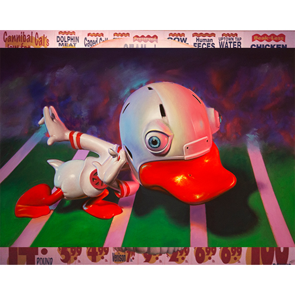

Exhibitions
POPAGANDASTAN – New Works from Ron English, Corey Helford Gallery, Los Angeles, California, US, October 26–November 16, 2013.
Notes
The work is documented on Corey Helford Gallery’s exhibition object page for Eddie Six Quack, in RON ENGLISH POPAGANDASTAN, accessed April 8, 2026.